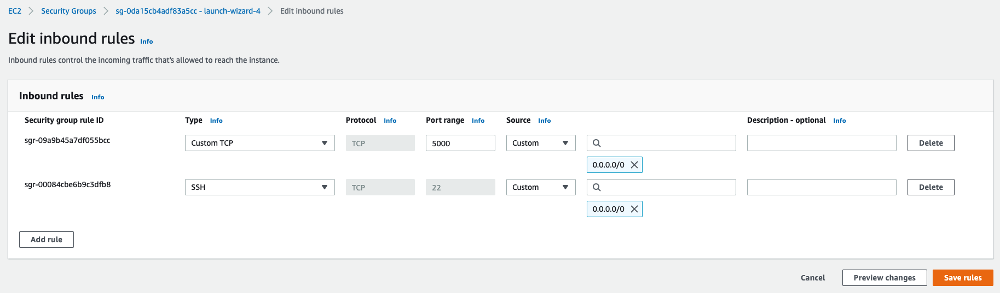
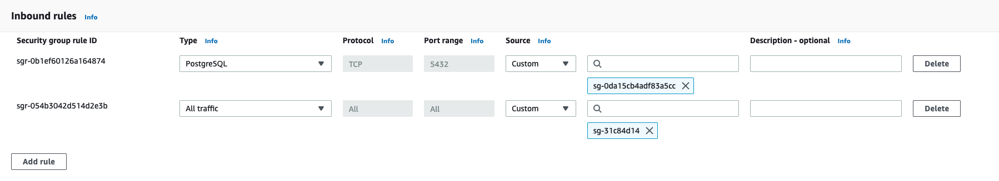

MLflow on AWS
This tutorials explains how to configure a MLflow remote tracking server on AWS. We will use an RDS database as the backend store and an S3 bucket as the artifact store.
Note: While the backend store persists MLflow entities (runs, parameters, metrics, tags, notes, metadata, etc), the artifact store persists artifacts (files, models, images, in-memory objects, or model summary, etc).
-
First, you need to create an AWS account. If you open a new account, AWS allows you to use some of their products for free but take into account that you may be charged for using the AWS services. More information here and here.
-
Launch a new EC2 instance
Go to EC2 service and click in launch instance(orange button), now config the VM as:
- Name:
mlflow_tracking-server - Amazon Machine Image:
Amazon Linux 2 AMI (HVM) - Kernel 5.10, SSD Volume Type - Architecture:
64-bit (x86) - Instance type:
t2.micro - Create and select a key pair:
- Key pair name:
mlflow-key-pair - Key pair type:
RSA - Private key file format:
.pem
- Key pair name:
- Configure Storage:
1x 8 Gib gp2 Root Volume
Finally, you have to edit the security group so the EC2 instance accepts SSH (port 22) and HTTP connections (port 5000) as follow:
- Go to EC2 instances
- Click in Instance ID
- Go to "Security" tab
- Click in "Security groups"
- Click in "Edit inbound rules"
- Add a new rule as the image

Now you can connect to the VM using the steps in module 1
Note: You can use the EC2 instance created in the module 1 but in that case you have to apply the last step(Editting the security group).
- Name:
-
Create an S3 bucket to be used as the artifact store
- Go to S3 and click on "Create bucket"
- Fill Bucket name, for example with
mlflow-artifacts-remote - Click on "Create bucket"
Note: S3 bucket names must be unique across all AWS account in all the AWS Regions within a partition, that means that once a bucket is created, the name of that bucket cannot be used by another AWS account within the same region. If you get an error saying that the bucket name was already taken you can fix it easily by just changing the name to something like
mlflow-artifacts-remote-2or another name. -
Create a new PostgreSQL Database(To be used as the backend store)
Go to the RDS Console and click on "Create database" and choose the next configuration:
- Engine Options
- Engine type:
PostgreSQL - Version:
PostgreSQL 13.4-R1
- Engine type:
- Templates:
Free tier - Settings
- DB instance identifier:
mlflow-backend-db - Master username:
mlflow - Auto generate a password: Tick the option
- DB instance identifier:
- Additional configuration
- Initial database name:
mlflow_db
- Initial database name:
You can use the default values for all the other configurations. Now click in "Create database". Then you'll can view the credentials, its important that you save the credentials beacuse the password will be shown only once!

Take note of the following information:
- Master username
- Master password
- Initial database name
- Endpoint
To get the endpoint Go to RDS -> Go to DB intances -> Click in the DB identifier -> The endpoint is in the "Connectivity & security" tab, the endpoint take some time to appear, be patient.
Once the DB instance is created, go to the RDS console, select the new db and under "Connectivity & security" select the VPC security group. Modify the security group by adding a new inbound rule that allows postgreSQL connections on the port 5432 from the security group of the EC2 instance.
- In RDS go to DB instances
- Click in the DB identifier
- Go to "Connectivity & security" tab and click in the "VPC security groups"
- Click in "Edit inbound rules"
- Add a rule as the image

The security group in the right of the
Customshould be the same as the security group of the EC2 instance, to know the security group of the EC2 instance:- Go to EC2 and click in "Instance ID"
- Go to the Security tab and in Security groups is what you want.
This way, the server will be able to connect to the postgres database.
Note0: Thick the option "Auto generate a password" will be Amazon RDS generate a password automatically.
Note1: Setting a initial database name will be that RDS automatically creates an initial database for you.
Note2: If you use this for a production project you can consider use a different template like a
Productiontemplate. - Engine Options
-
Connect to the EC2 Instance and launch the Tracking Server.
EC2 Connection
Start the EC2 instance created in step 2, select it and click in connect and use the easy way click in "EC2 instance connect".Run the following commands to install the dependencies, configure the environment and launch the server:
sudo yum updatepip3 install mlflow boto3 psycopg2-binaryaws configure# You'll need to input your AWS credentials here You will need to input:AWS Access Key IDAWS Secret Access KeyDefault region name: You can left unchangeDefault output format: You can left unchange
To get your AWS credentials, in the navigation bar on the upper right, choose your account name or number and then choose "Security Credentials", then expand the "Access keys (access key ID and secret access key)" section, now click in "Create New Access Key" button an the credentials will appear, this is your only opportunity to save your secret access key. After you've saved your secret access key in a secure location, chose Close.
Before launching the server, check that the instance can access the s3 bucket created in the step number 3. To do that, just run this command from the EC2 instance:
aws s3 ls. You should see the bucket listed in the result.Note: You can't have more than two credentials, if you want a new want you have to delete one.
Launching the server
mlflow server -h 0.0.0.0 -p 5000 --backend-store-uri postgresql://DB_USER:DB_PASSWORD@DB_ENDPOINT:5432/DB_NAME --default-artifact-root s3://S3_BUCKET_NAMEDB_USER: The Master username that you took noteDB_PASSWORD: The Password username that you took noteDB_ENDPOINT: The Endpoint of the PostgreSQL DatabaseDB_NAME: The name of the dbS3_BUCKET_NAME: The bucket name in step 3
Example:
DB_USER: mlflowDB_PASSWORD: PLMYm3uAUPumN7LXs0zxDB_ENDPOINT: mlflow-backend-db.cxtpca0hxwbo.us-east-2.rds.amazonaws.comDB_NAME: mlflow_dbS3_BUCKET_NAME: mlflow-artifacts-remote-31
-
Access the remote tracking server from your local machine.
Access using the UI
Open a new tab on your web browser and go to this address:
http://<EC2_PUBLIC_DNS>:5000(you can find the instance's public DNS by checking the details of your instance in the EC2 Console).For example:
http://ec2-18-191-194-132.us-east-2.compute.amazonaws.com:5000Access using Python code
Now you have configure the AWS credentials in the EC2 instance, if you want to use your localhost as the client you need to configure the AWS credentials as well.
Set credentials in the AWS credentials profile file on your local system, located at(if the directory doesn't exist you can create it):
-
~/.aws/credentialson Linux, macOS, or Unix -
C:\Users\USERNAME\.aws\credentialson Windows
This file should contain lines in the following format:
[default] aws_access_key_id = your_access_key_id aws_secret_access_key = your_secret_access_keySubstitute your own AWS credentials values for the values your_access_key_id and your_secret_access_key. Now this profile named as
defaultcan be use to set your credentials.Note: You can change the name of the profile is not mandatory to use
defaultname.Now you can acces from python code in your local host, you should be able to run:
import mlflow import os os.environ["AWS_PROFILE"] = "default" # Fill in with your AWS profile. More info: https://docs.aws.amazon.com/sdk-for-java/latest/developer-guide/setup.html#setup-credentials TRACKING_SERVER_HOST = "ec2-3-135-9-149.us-east-2.compute.amazonaws.com" # fill in with the public DNS of the EC2 instance mlflow.set_tracking_uri(f"http://{TRACKING_SERVER_HOST}:5000")Traking a model:
from sklearn.linear_model import LogisticRegression from sklearn.datasets import load_iris from sklearn.metrics import accuracy_score mlflow.set_experiment("my-experiment-1") with mlflow.start_run(): X, y = load_iris(return_X_y=True) params = {"C": 0.1, "random_state": 42} mlflow.log_params(params) lr = LogisticRegression(**params).fit(X, y) y_pred = lr.predict(X) mlflow.log_metric("accuracy", accuracy_score(y, y_pred)) mlflow.sklearn.log_model(lr, artifact_path="models") print(f"default artifacts URI: '{mlflow.get_artifact_uri()}'")Using Model Registry:
from mlflow.tracking import MlflowClient client = MlflowClient(f"http://{TRACKING_SERVER_HOST}:5000") run_id = client.list_run_infos(experiment_id='1')[0].run_id mlflow.register_model( model_uri=f"runs:/{run_id}/models", name='iris-classifier' ) -